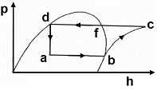
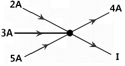
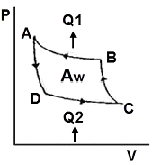
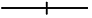
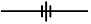
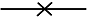

공조냉동기계기능사 (2014-04-06 기출문제)
1과목: 공조냉동안전관리
1. 수공구인 망치(hammer)의 안전 작업수칙으로 올바르지 못한 것은?
- 작업 중 해머 상태를 확인할 것
- 담금질한 것은 처음부터 힘을 주어 두들길 것
- 장갑이나 기름 묻은 손으로 자루를 잡지 않는다.
- 해머의 공동 작업 시에는 서로 호흡을 맞출 것
(정답률: 94%)

2. 산소의 저장설비 주위 몇 m 이내에는 화기를 취급해서는 안 되는가?(오류 신고가 접수된 문제입니다. 반드시 정답과 해설을 확인하시기 바랍니다.)
- 5m
- 6m
- 7m
- 8m
(정답률: 78%)
3. 안전사고 발생의 심리적 요인에 해당되는 것은?
- 감정
- 극도의 피로감
- 육체적 능력의 초과
- 신경계통의 이상
(정답률: 85%)
4. 아세틸렌 용접기에서 가스가 새어 나올 경우 적당한 검사방법은?
- 촛불로 검사한다.
- 기름을 칠해본다.
- 성냥불로 검사한다.
- 비눗물을 칠해 검사한다.
(정답률: 94%)
5. 안전사고 예방을 위하여 신는 작업용 안전화의 설명으로 틀린 것은?
- 중량물을 취급하는 작업장에서는 앞 발가락 부분이 고무로 된 신발을 착용한다.
- 용접공은 구두창에 쇠붙이가 없는 부도체의 안전화를 신어야 한다.
- 부식성 약품 사용 시에는 고무제품 장화를 착용한다.
- 작거나 헐거운 안전화는 신지 말아야 한다.
(정답률: 86%)
6. 다음 중 C급 화재에 적합한 소화기는?
- 건조사
- 포말 소화기
- 물 소화기
- 분말 소화기와 CO2 소화기
(정답률: 82%)
7. 보일러 휴지 시 보존방법에 관한 내용 중 틀린 것은?
- 휴지기간이 6개월 이상인 경우에는 건조보존법을 택한다.
- 휴지기간이 3개월 이상인 경우에는 만수보존법을 택한다.
- 만수보존 시의 Ph값은 4~5정도로 유지하는 것이 좋다.
- 건조보존 시에는 보일러를 청소하고 완전히 건조시킨다.
(정답률: 76%)
8. 연삭기의 받침대와 숫돌차의 중심 높이에 대한 내용으로 적합한 것은?
- 서로 같게 한다.
- 받침대를 높게 한다.
- 받침대를 낮게 한다.
- 받침대가 높던 낮던 관계없다.
(정답률: 73%)
9. 와이어로프를 양중기에 사용해서는 아니 되는 기준으로 잘못된 것은?(오류 신고가 접수된 문제입니다. 반드시 정답과 해설을 확인하시기 바랍니다.)
- 열과 전기충격에 의해 손상된 것
- 지름의 감소가 공칭지름의 7%를 초과하는 것
- 심하게 변형 또는 부식된 것
- 이음매가 없는 것
(정답률: 74%)
10. 전기기계·기구의 퓨즈 사용 목적으로 가장 적합한 것은?
- 기동 전류차단
- 과전류 차단
- 과전압 차단
- 누설 전류차단
(정답률: 79%)
11. 응축압력이 높을 때의 대책이라 볼 수 없는 것은?
- 가스퍼저(gas purger)를 점검하고 불응축가스를 배출 시킬 것
- 설계 수량을 검토하고 막힌 곳이 없는가를 조사 후 수리할 것
- 냉매를 과충전하여 부하를 감소시킬 것
- 냉각면적에 대한 설계계산을 검토하여 냉각면적을 추가할 것
(정답률: 83%)
12. 안전표시를 하는 목적이 아닌 것은?
- 작업환경을 통제하여 예상되는 재해를 사전에 예방함
- 시각적 자극으로 주의력을 키움
- 불안전한 행동을 배제하고 재해를 예방함
- 사업장의 경계를 구분하기 위해 실시함
(정답률: 86%)
13. 상용주파수(60Hz)에서 전류의 흐름을 느낄 수 있는 최소전류 값으로 옳은 것은?
- 1mA
- 5mA
- 10mA
- 20mA
(정답률: 63%)
14. 동력에 의해 운전되는 컨베이어 등에 근로자의 신체의 일부가 말려드는 등 근로자에게 위험을 미칠 우려가 있을 때는 설치해야 할 장치는 무엇인가?
- 권과 방지 장치
- 비상정지장치
- 해지장치
- 이탈 및 역주행 방지장치
(정답률: 89%)
15. 보일러에 사용하는 안전밸브의 필요조건이 아닌 것은?
- 분출압력에 대한 작동이 정확할 것
- 안전밸브의 크기는 보일러의 정격용량 이상을 분출할 것
- 밸브의 개폐동작이 완만할 것
- 분출 전·후에 증기가 새지 않을 것
(정답률: 60%)
2과목: 냉동기계
16. 15℃의 1ton의 물을 0℃의 얼음으로 만드는데 제거해야할 열량은? (단, 물의 비열 4.2kJ/kg·K, 응고잠열 334kJ/kg 이다.)
- 63000kJ
- 271600kJ
- 334000kJ
- 397000kJ
(정답률: 47%)
17. 최대값이 Im인 사인파 교류전류가 있다. 이 전류의 파고율은?
- 1.11
- 1.414
- 1.71
- 3.14
(정답률: 68%)
18. 다음 중 브라인의 동파방지책으로 옳지 않은 것은?
- 부동액을 첨가한다.
- 단수릴레이를 설치한다.
- 흡입압력조절밸브를 설치한다.
- 브라인 순환펌프와 압축기 모터를 인터록 한다.
(정답률: 62%)
19. 냉매에 관한 설명으로 옳은 것은?
- 비열비가 큰 것이 유리하다.
- 응고온도가 낮을수록 유리하다.
- 임계온도가 낮을수록 유리하다.
- 증발온도에서의 압력은 대기압보다 약간 낮을 것이 유리하다.
(정답률: 55%)
20. 동관을 용접 이음하려고 한다. 다음 중 가장 적당한 것은?
- 가스 용접
- 스폿 용접
- 테르밋 용접
- 프라즈마 용접
(정답률: 86%)
21. 다음 중 수소, 염소, 불소, 탄소로 구성된 냉매계열은?
- HFC 계
- HCFC 계
- CFC 계
- 할론 계
(정답률: 83%)
22. 냉동기 오일에 관한 설명으로 옳지 않은 것은?
- 윤활 방식에는 비말식과 강제급유식이 있다.
- 사용 오일은 응고점이 높고 인화점이 낮아야 한다.
- 수분의 함유량이 적고 장기간 사용하여도 변질이 적어야 한다.
- 일반적으로 고속다기통 압축기의 경우 윤활유의 온도는 50~60℃ 정도이다.
(정답률: 75%)
23. 다음 그림(p-h 선도)에서 응축부하를 구하는 식으로 맞는 것은?

- hc-hd
- hc-hb
- hb-ha
- hd-ha
(정답률: 66%)
24. 절대 압력과 게이지 압력과의 관계식으로 옳은 것은?
- 절대압력 = 대기압력 ＋ 게이지 압력
- 절대압력 = 대기압력 - 게이지 압력
- 절대압력 = 대기압력 × 게이지 압력
- 절대압력 = 대기압력 ÷ 게이지 압력
(정답률: 75%)
25. 회로망 중의 한 점에서의 전류의 흐름이 그림과 같을 때 전류 I는 얼마인가?

- 2A
- 4A
- 6A
- 8A
(정답률: 85%)
26. 제빙 장치에서 브라인의 온도가 -10℃이고, 결빙소요시간이 48시간일 때 얼음의 두께는 약 몇 mm인가? (단, 결빙계수는 0.56 이다.)
- 253mm
- 273mm
- 293mm
- 313mm
(정답률: 38%)
27. 냉동기의 보수계획을 세우기 전에 실행하여야 할 사항으로 옳지 않은 것은?
- 인사기록철의 완비
- 설비 운전기록의 완비
- 보수용 부품 명세의 기록 완비
- 설비 인·허가에 관한 서류 및 기록 등의 보존
(정답률: 82%)
28. 2단 압축장치의 구성 기기에 속하지 않는 것은?
- 증발기
- 팽창 밸브
- 고단 압축기
- 캐스케이드 응축기
(정답률: 71%)
29. 2원 냉동장치에 사용하는 저온측 냉매로서 옳은 것은?
- R-717
- R-718
- R-14
- R-22
(정답률: 55%)
30. 온도식 자동팽창 밸브에 관한 설명으로 옳은 것은?
- 냉매의 유량은 증발기 입구의 냉매가스 과열도에 의해 제어된다.
- R-12에 사용하는 팽창밸브를 R-22 냉동기에 그대로 사용해도 된다.
- 팽창 밸브가 지나치게 적으면 압축기 흡입가스의 과열도는 크게 된다.
- 증발기가 너무 길어 증발기의 출구에서 압력 강하가 커지는 경우에는 내부균압형을 사용한다.
(정답률: 50%)
31. 수증기를 열원으로 하여 냉방에 적용시킬 수 있는 냉동기는?
- 원심식 냉동기
- 왕복식 냉동기
- 흡수식 냉동기
- 터보식 냉동기
(정답률: 81%)
32. 15A 강관을 45˚로 구부릴 때 곡관부의 길이(mm)는? (단, 굽힘 반지름은 100mm 이다.)
- 78.5
- 90.5
- 157
- 209
(정답률: 48%)
33. 다음의 역 카르노 사이클에서 냉동장치의 각 기기에 해당되는 구간이 바르게 연결된 것은?

- B→A 응축기, C→B 팽창변, D→C 증발기, A→D 압축기
- B→A 증발기, C→B 압축기, D→C 응축기, A→D 팽창변
- B→A 응축기, C→B 압축기, D→C 증발기, A→D 팽창변
- B→A 압축기, C→B 응축기, D→C 증발기, A→D 팽창변
(정답률: 73%)
34. 다음 중 냉동장치에서 전자밸브의 사용 목적과 가장 거리가 먼 것은?
- 온도 제어
- 습도 제어
- 냉매, 브라인의 흐름제어
- 리키드 백(Liquid back)방지
(정답률: 57%)
35. 증발열을 이용한 냉동법이 아닌 것은?
- 증기분사식 냉동법
- 압축 기체 팽창 냉동법
- 흡수식 냉동법
- 증기 압축식 냉동법
(정답률: 62%)
36. 수평배관을 서로 직선 연결할 때 사용되는 이음쇠는?
- 캡
- 티
- 유니온
- 엘보우
(정답률: 82%)
37. 다음 중 입력신호가 0이면 출력이 1이 되고 반대로 입력이 1이면 출력이 0이 되는 회로는?
- NAND회로
- OR회로
- NOR회로
- NOT회로
(정답률: 64%)
38. 증발식 응축기 설계 시 1RT당 전열면적은? (단, 응축온도는 43℃로 한다.)
- 1.2m2/RT
- 3.5m2/RT
- 6.5m2/RT
- 7.5m2/RT
(정답률: 44%)
39. 유니언 나사이음의 도시기호로 옳은 것은?




(정답률: 79%)
40. 냉동 효과의 증대 및 플래쉬(flahs) 가스 방지에 적당한 싸이클은?
- 건조 압축 싸이클
- 과열 압축 싸이클
- 습압축 싸이클
- 과냉각 싸이클
(정답률: 62%)
41. 압축방식에 의한 분류 중 체적 압축식 압축기에 속하지 않는 것은?
- 왕복동식 압축기
- 회전식 압축기
- 스크류식 압축기
- 흡수식 압축기
(정답률: 73%)
42. 탱크형 증발기에 관한 설명으로 옳지 않은 것은?
- 만액식에 속한다.
- 주로 암모니아용으로 제빙용에 사용된다.
- 상부에는 가스헤드, 하부에는 액헤드가 존재한다.
- 브라인의 유동속도가 늦어도 능력에는 변화가 없다.
(정답률: 66%)
43. 회전식과 비교한 왕복동식 압축기의 특징으로 옳지 않은 것은?
- 진동이 크다.
- 압축능력이 적다.
- 압축이 단속적이다.
- 크랭크 케이스 내부압력이 저압이다.
(정답률: 49%)
44. 4방 밸브를 이용하여 겨울에는 고온부 방출열로 난방을 행하고 여름에는 저온부로 열을 흡수하여 냉방을 행하는 장치는?
- 열펌프
- 열전 냉동기
- 증기분사 냉동기
- 공기사이클 냉동기
(정답률: 61%)
45. 수액기 취급 시 주의 사항으로 옳은 것은?
- 직사광선을 받아도 무방하다.
- 안전밸브를 설치할 필요가 없다.
- 균압관은 지름이 작은 것을 사용한다.
- 저장 냉매액을 3/4 이상 채우지 말아야 한다.
(정답률: 79%)
3과목: 공기조화
46. 송풍기의 정압에 대한 내용으로 옳은 것은?
- 정압 = 동압 × 전압
- 정압 = 동압 ÷ 전압
- 정압 = 전압 - 동압
- 정압 = 동압 ＋ 전압
(정답률: 52%)
47. 공기조화기용 코일의 배열방식에 따른 분류에 해당되지 않는 것은?
- 풀 서킷 코일
- 더블 서킷 코일
- 슬릿 핀 서킷 코일
- 하프 서킷 코일
(정답률: 68%)
48. 보일러의 증발량이 20ton/h이고 본체 전열면적이 400m2 일 때, 이 보일러의 증발률은 얼마인가?
- 30kg/m2h
- 40kg/m2h
- 50kg/m2h
- 60kg/m2h
(정답률: 58%)
49. 공기조화 설비의 구성은 열원장치, 공기조화기, 열 운반장치 등으로 구분하는데, 이중 공기조화기에 해당되지 않는 것은?
- 여과기
- 제습기
- 가열기
- 송풍기
(정답률: 53%)
50. 온도, 습도, 기류를 1개의 지수로 나타낸 것으로 상대습도 100%, 풍속 0 m/s인 경우의 온도는?
- 복사온도
- 유효온도
- 불쾌온도
- 효과온도
(정답률: 73%)
51. 적당한 위치에 배기구를 설치하고 송풍기에 의하여 외기를 강제적으로 도입하여 배기는 배기구에서 자연적으로 환기되도록 하는 환기법은?
- 제1종 환기
- 제2종 환기
- 제3종 환기
- 제4종 환기
(정답률: 73%)
52. 독립계통으로 운전이 자유롭고 냉수 배관이나 복잡한 덕트 등이 없기 때문에 소규모 상점이나 사무실 등에서 사용되는 경제적인 공조 방식은?
- 중앙식 공조 방식
- 복사 냉난방 공조 방식
- 유인유닛 공조 방식
- 패키지 유닛 공조 방식
(정답률: 77%)
53. 온풍난방의 특징에 대한 설명으로 옳은 것은?
- 예열시간이 짧아 간헐운전이 가능하다.
- 온·습도 조정을 할 수 없다.
- 실내 상하온도차가 적어 쾌적성이 좋다.
- 공기를 공급하므로 소음발생이 적다.
(정답률: 70%)
54. 터보형 펌프의 종류에 해당되지 않는 것은?
- 볼류트 펌프
- 터빈 펌프
- 축류 펌프
- 수격 펌프
(정답률: 59%)
55. 수-공기 방식인 팬 코일 유닛(fan coil unit)방식의 장점으로 옳지 않은 것은?
- 개별제어가 가능하다.
- 부하변경에 따른 증설이 비교적 간단하다.
- 전공기 방식에 비해 이송동력이 적다.
- 부분 부하 시 도입 외기량이 많아 실내공기의 오염이 적다.
(정답률: 57%)
56. 벌집모양의 로터롤 회전시키면서 윗부분으로 외기를 아래쪽으로 실내배기를 통과하면서 외기와 배기의 온도 및 습도를 교환하는 열교환기는?
- 고정식 전열교환기
- 현열교환기
- 히트 파이프
- 회전식 전열교환기
(정답률: 76%)
57. 습공기 선도에서 표시되어 있지 않은 값은?
- 건구온도
- 습구온도
- 엔탈피
- 엔트로피
(정답률: 61%)
58. 냉방부하 계산 시 현열부하에만 속하는 것은?
- 인체에서의 발생열
- 실내 기구에서의 발생열
- 송풍기의 동력열
- 틈새바람에 의한 열
(정답률: 48%)
59. 콜드 드래프트(cold draft)현상의 원인에 해당되지 않는 것은?
- 주위 벽면의 온도가 낮을 때
- 동절기 창문의 극간풍이 없을 때
- 기류의 속도가 클 때
- 주위 공기의 습도가 낮을 때
(정답률: 66%)
60. 다익형 송풍기의 임펠러 지름이 450mm인 경우 이 송풍기의 번호는 몇 번인가?
- NO 2
- NO 3
- NO 4
- NO 5
(정답률: 70%)